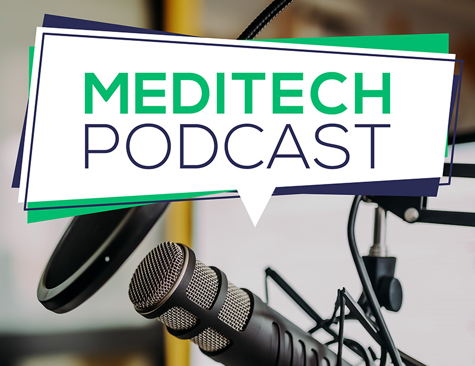
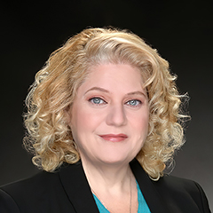

MEDITECH Podcast
Hear the latest from our friends and colleagues in the US, Canada, and abroad on topics we think you should know about. Follow us on your favorite podcast app.
Subscribe to the podcast:
Mike Cordeiro
Senior Director of Interoperability Market and Product Strategy at MEDITECH
Allison Pallatroni
Product Manager for Interoperability at MEDITECH
Jim Matney
President and Chief Executive Officer at Colquitt Regional Medical Center
Jonathan Hatfield
Chief Executive Officer at Klickitat Valley Health
Leigh Williams
Assistant CIO at Augusta Health
Carrie McHenry
Care Transition Manager at Clarion Hospital
Transformational Success
CIO Podcast by Healthcare IT Today with Nolan Hennessee, St. Joseph’s/Candler Health System
Nolan Hennessee
CIO and Vice President at St. Joseph’s/Candler Health System
Digital Transformation
MUSE Views with Randy Brandt, Mile Bluff Medical Center, and Christine Silva, MEDITECH
Randy Brandt, PA-C
Physician Assistant at Mile Bluff Medical Center
Christine Silva
Senior Director of Field Marketing Operations at MEDITECH
Digital Transformation
Seizing the Healthcare AI Advantage
Digital Transformation
Seizing the Healthcare AI Advantage
In this episode of the MEDITECH Podcast, host Rachel Wilkes engages in a thought-provoking discussion with futurist Zack Kass, exploring the profound impact of artificial intelligence on healthcare and beyond. Zack, drawing from his extensive experience as Former Head of GTM at OpenAI, shares insights into why AI is personally important to him and recounts transformative moments where AI influenced his life, emphasizing the need for embracing technological advancements. He paints a visionary picture of a future world empowered by AI, offering key insights into ethical considerations and bias mitigation in AI development. Zack stresses the critical relevance of AI for healthcare workers and leaders alike, urging clinicians and executives to recognize its potential in enhancing patient care, operational efficiency, and strategic decision-making. He highlights the necessity for ongoing education and adaptation in the AI field, recommending resources for staying informed. Looking ahead, Zack predicts AI's evolution over the next decade, envisioning its profound implications for healthcare, businesses, and society, and emphasizes the necessity for future-proofing skills in the era of AI.
Zack Kass
Futurist and Former Head of GTM at OpenAI

Rachel Wilkes
Director, Marketing at MEDITECH
Zack Kass
Futurist and Former Head of GTM at OpenAI
Rachel Wilkes
Director, Marketing at MEDITECH
Healthcare Equity
Becker’s Healthcare Podcast with José R. Sánchez, Humboldt Park Health, and Daisy Rodriguez, Humboldt Park Health
José R. Sánchez
Chief Executive Officer at Humboldt Park Health
Daisy Rodriguez
Chief Operating Officer at Humboldt Park Health
Rachel Wilkes
Director of Corporate Brand and Lead Generation Marketing at MEDITECH
Alex Brinkert, BSN, RN, MPH
Senior Research Analyst Marketing at MEDITECH
Transformational Success
This Week Health with Dara Bartels, Mile Bluff Medical Center
Transformational Success
This Week Health with Dara Bartels, Mile Bluff Medical Center
Dara Bartels, Chief Executive Officer at Mile Bluff Medical Center, joins This Week Health at HIMSS24 where she discusses the evolution of Mile Bluff’s EHR system and the complexities of EHR integration. By implementing MEDITECH Expanse across the continuum of care, they were able to enhance data accessibility and reduce burnout.
Mile Bluff also contributed to the evolution of healthcare delivery as the early adopter of MEDITECH Expanse search and summarization powered by Google Health. Tune in to gain more insight on the solution’s powerful capabilities.
_0.jpg)
Dara Bartels
Chief Executive Officer at Mile Bluff Medical Center
Dara Bartels
Chief Executive Officer at Mile Bluff Medical Center
Digital Transformation
HIMSSCast with Rachel Wilkes, MEDITECH
Digital Transformation
HIMSSCast with Rachel Wilkes, MEDITECH
Talking with HIMSSCast, MEDITECH’s Director of Corporate Brand and Lead Generation Marketing Rachel Wilkes highlights MEDITECH’s meaningful use of AI and intelligent interoperability. MEDITECH Expanse reduces the burden on busy clinicians by leveraging those strategies, proving to improve efficiency, allow organizations to maintain their independence, and surface actionable data so clinicians can make the best decisions for their patients.
Hear more about Expanse, the intelligent EHR platform, and other functionalities such as the search and summarization of patient records and automation of clinical documentation.

Rachel Wilkes
Director of Corporate Brand and Lead Generation Marketing at MEDITECH
Rachel Wilkes
Director of Corporate Brand and Lead Generation Marketing at MEDITECH
Interoperability
MUSE Views with Sherry Montileone, Citizens Memorial Hospital, and Mike Cordeiro, MEDITECH
Sherry Montileone
Chief Information Officer at Citizens Memorial Hospital
Mike Cordeiro
Senior Director of Interoperability Market and Product Strategy at MEDITECH
Eric Rogers
Chief Information Officer at Hebrew SeniorLife
Priscilla Frase, MD
CMIO & Hospitalist at Ozarks Healthcare
Linda Williams
Clinical Manager - Ambulatory Care at Kingman Regional Medical Center
Helen Waters
Executive Vice President & COO at MEDITECH
Digital Transformation
MUSE Views with Helen Waters, MEDITECH
Digital Transformation
MUSE Views with Helen Waters, MEDITECH
Tune into MUSE Views as they interview Helen Waters, Executive Vice President & COO at MEDITECH, to learn more about the one of the top EHR companies in the US. Taking listeners behind the scenes, Helen describes MEDITECH’s culture of longevity and commitment to promoting within the company. On the external side, Helen dives into MEDITECH Circle, the new customer support platform, which opens up a new avenue of communication between user and vendor. Also learn more about MUSE as an organization and its value to MEDITECH for the past four decades.

Helen Waters
Executive Vice President & COO at MEDITECH
Helen Waters
Executive Vice President & COO at MEDITECH
Jennifer Mueller, MBA, RHIA, SHIMSS, FACHE, FAHIMA
Vice President and Privacy Officer at Wisconsin Hospital Association and President/Chair at American Health Information Management Association (AHIMA)
Lindsay Doak, MBA
Director of Research at BerryDunn
Healthcare Data & Analytics
Achieving Better Homecare Value-Based Purchasing Results without Sacrificing Integrity
Cindy Krafft, PT, MS
K & K Health Care Solutions owner and founder
Billy Helmandollar
CIO at DCH Health System
Alan Sherbinin
CEO at the MUSE community of independent MEDITECH users
Vivian S. Lee
President of the health platforms unit of Verily
Nursing Leadership
How nurses are shaping the future of their field
Nursing Leadership
How nurses are shaping the future of their field
In this three-part series, we explore the nursing profession from a variety of perspectives—covering interesting career trajectories for nurses, what they are most passionate about, where they find resilience during challenging times, and how nurses in the field are being supported by their organizations and communities.
We begin by exploring the latest innovations in HIM education–for students, healthcare professionals, or clinicians–with John Richey, MBA, RHIA, FAHIMA, of the American Health Information Management Association (AHIMA).
Claire Dale
Director Of Nursing at Citizens Memorial

Jane Englebright, PhD, RN
Chief Nurse Executive and Senior Vice President, HCA Healthcare (recently retired)
Kyla Inman, RN
Family Nurse Practitioner, Citizens Memorial

Angela Long, CRNP, FNP-BC, PMHNP-BC
Citizens Memorial
John Richey, MBA, RHIA, FAHIMA
American Health Information Management Association (AHIMA)
Claire Dale
Director Of Nursing at Citizens Memorial
Jane Englebright, PhD, RN
Chief Nurse Executive and Senior Vice President, HCA Healthcare (recently retired)
Kyla Inman, RN
Family Nurse Practitioner, Citizens Memorial
Angela Long, CRNP, FNP-BC, PMHNP-BC
Citizens Memorial
John Richey, MBA, RHIA, FAHIMA
American Health Information Management Association (AHIMA)
Jayson Marwaha, MD, MSc
A general surgery resident and postdoctoral fellow in surgical AI at Harvard Medical School
Julia Hanigsberg
President & CEO of Holland Bloorview Kids Rehabilitation Hospital
Tom Kurtz
Chief Administrative Officer at Memorial Healthcare
Kelsey Reed
Nurse Practitioner and Director of Patient Care at Phoebe Putney Health System
Anna Dover, PharmD, BCPS
Director Product Management with FDB
Marsha Fearing, MD, MPH, MMSc
Medical Geneticist
Jennifer Ford, MBA
Genomics Product Manager, MEDITECH
Esteban Lopez, MD, MBA
Physician thought leader at Google Cloud
Jane Englebright, PhD, RN
Chief Nurse Executive and Senior Vice President, HCA Healthcare
Dr. K. Nadeem Ahmed
CMIO, Aga Khan University and Hospitals
Dr. Boniface Mativa
Acting CMO at Aga Khan University Hospital Nairobi
Colin Hung, CMO
Editor of Healthcare Scene
Jennifer Zelmer, PhD
President and CEO of Healthcare Excellence Canada
Patient Engagement
Leveraging Virtual Care Through COVID-19 and Beyond
Patient Engagement
Leveraging Virtual Care Through COVID-19 and Beyond
Louis Harris, CMIO, MD
Citizens Memorial Healthcare

Sherry Montileone
CIO, Citizens Memorial Healthcare
Louis Harris, CMIO, MD
Citizens Memorial Healthcare
Sherry Montileone
CIO, Citizens Memorial Healthcare
Sanaz Riahi, RN, MSN
Director Professional Practice and Clinical Information, Ontario Shores Centre for Mental Health Sciences
Alicia Brubaker, RN
Director of Clinical Informatics, The Valley Hospital
Chris Neumann
Clinical Analyst for Surveillance, The Valley Hospital
Clark Averill
Director of Information Technology, St Luke’s Regional Healthcare System
Missy Francisco Carlson
Patient Experience Program Manager, St Luke’s Regional Healthcare System
Denao Ruttino
VP of Operations, CIO, Firelands Regional Health System
Jesse Diaz
VP, CIO, Phoebe Putney Health System
Dr. William Sewell
CMIO Phoebe Putney Health System